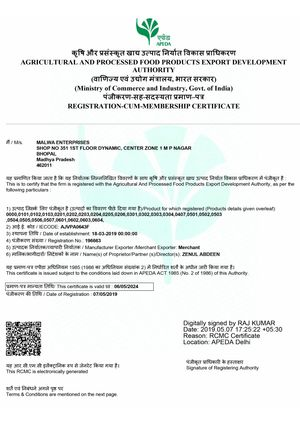

mail us on info@Malwaexport.com
Malwa has created a set of standards which ensure that all our producers comply with Good Agricultural Practices (G.A.P.) Malwa has some of the most advance agriculture practices , which includes the most up-to-date production & handling practices. Together with the “Food Chain Partnership “ we have strict control and use of agrochemicals . Samples are regularly send for testing at an accredited laboratory..
MRL levels are tested in order to ensure that they comply with a market requirements, Modern Packing Methods and Good Cold Chain Management are used, worker hygiene and sanitation is constantly monitored in order to produce a safe product. Accreditation like a global gap are compulsory with fresh grapes.
A. P. E. D. A.
Agricultural and Processed Food Products Export Development Authority (APEDA) is an apex body under the Ministry of Commerce and Industry, Government of India, responsible for the export promotion of agricultural products.The Agricultural and Processed Food Products Export Development Authority (APEDA) was established by the Government of India under the Agricultural and Processed Food Products Export Development Authority Act passed by the Parliament in December, 1985. The Act (2 of 1986) came into effect from 13th February, 1986 by a notification issued in the Gazette of India: Extraordinary: Part-II [Sec. 3(ii): 13.2.1986). The Authority replaced the Processed Food Export Promotion Council (PFEPC). Find more here APEDA.
This system or agriculture practice can be used for several agriculture products and marks it possible to certify these products.
Bayer crop science is one of the leading innovative crop science companies, who is fully committed to sustainable development in agriculture these for we see our responsibility in supporting the players of the international food value chain to over come these challenges and even exceed the expectation of the customer our partners can region strong research & development pipeline and excellent portfolio of innovative crop protection products & vegetable seeds which we combine with different services to customer focused, pragmatics yet professional solution food chain partnership.


{kind=link}
{kind=link}